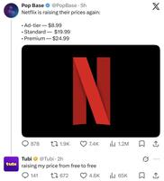

CERN has confirmed it will host an expanded version of Open Research Europe, the EU-backed fee-free open access publishing platform that works to "keep knowledge in public hands." Research Professional News reports: A little over a year ago, 10 European research organizations announced that they would add their support to Open Research Europe, to broaden eligibility beyond only those researchers funded by the EU research program. Earlier this year, RPN reported that this group had expanded further and that Cern was set to host the broadened version of ORE, currently provided by the publisher F1000.
On March 26, Cern itself finally announced the news, saying it will "provide the technical and operational infrastructure" for the broader version. It said this will build on its "longstanding experience in developing and maintaining open science infrastructures and community-governed services." [...] In its own announcement, the Commission said ORE will have a budget of 17 million euros for 2026-31, with the EU providing 10 million euros.
Since it launched five years ago, ORE has published more than 1,200 articles. Cern said the platform is "expected to support a growing number of research outputs each year." Last month, experts told RPN they thought uptake of the increased eligibility will depend on how the newly participating national organizations engage with their communities. Eleven members of Science Europe, a group of major research funding and performing organizations, are part of the expansion.
Read more of this story at Slashdot.
Apple has discontinued the Mac Pro and says it has no plans for future models. "The 'buy' page on Apple's website for the Mac Pro now redirects to the Mac's homepage, where all references have been removed," reports 9to5Mac. From the report: The Mac Pro has lived many lives over the years. Apple released the current Mac Pro industrial design in 2019 alongside the Pro Display XDR (which was also discontinued earlier this month). That version of the Mac Pro was powered by Intel, and Apple refreshed it with the M2 Ultra chip in June 2023. It has gone without an update since then, languishing at its $6,999 price point even as Apple debuted the M3 Ultra chip in the Mac Studio last year.
Read more of this story at Slashdot.
Elizabeth Warren and Josh Hawley are pressing the Energy Information Administration (EIA) to provide better information on how much electricity data centers actually use. In a joint letter sent to the EIA on Thursday, the two senators press the agency to publicly collect "comprehensive, annual energy-use disclosures" on data centers, saying it's "essential for accurate grid planning and will support policymaking to prevent large companies from increasing electricity costs for American families." Wired reports: In December, EIA administrator Tristan Abbey said at a roundtable that he expects the EIA "is going to be an essential player in providing objective data and analysis to policymakers" with respect to data centers. The agency announced on Wednesday that it would be conducting a voluntary pilot program to collect energy consumption information from nearly 200 companies operating data centers in Texas, Washington, and Virginia, which will cover "energy sources, electricity consumption, site characteristics, server metrics, and cooling systems."
While the senators praise the EIA pilot program, their letter includes several questions about how the agency plans to move forward with more data collection, such as whether or not the energy surveys will be mandatory and whether or not the EIA will collect information on behind-the-meter power. This information will be especially crucial, the senators say, to make sure that big tech companies that signed the agreement at the White House earlier this month pledging that consumers won't bear the costs of data center electricity use will stick to their promises. "Without this data, policymakers, utility companies, and local communities are operating in the dark," the senators write.
The EIA mandates that other industries, including oil and gas and manufacturing, provide regular data to the agency; Hawley and Warren assert that the EIA should be able to collect similar information from data centers under the same provision. The provision is broad enough, Peskoe says, that it could absolutely be interpreted to encompass data centers. Yesterday, Senator Bernie Sanders and Rep. Alexandria Ocasio-Cortez announced a bill that would "enact a reasonable pause to the development of AI to ensure the safety of humanity." It calls for a federal moratorium on AI data centers until stronger national safeguards are in place around safety, jobs, privacy, energy costs, and environmental impact.
Read more of this story at Slashdot.
BrianFagioli writes: Mozilla just teamed up with Mila, the Quebec Artificial Intelligence Institute, to push open source AI -- and it feels like a direct response to Big Tech tightening its grip on the space. Instead of relying on closed models, the goal here is to build "sovereign AI" that's more transparent, privacy-focused, and actually under the control of developers and even governments. They're starting with things like private memory for AI agents, which sounds niche but matters if you care about where your data goes. Big question is whether open source can realistically keep up with the billions being poured into proprietary AI, but at least someone's trying to give folks an alternative. "Canada has what it takes to lead on frontier AI that the world can actually trust: the research depth, the values, and the will to do it differently. The next frontier in AI isn't just capability, it is trustworthiness, and Canada is uniquely positioned to lead on both. This partnership is a concrete step in that direction. Open, trustworthy AI isn't a compromise on ambition. It's the higher bar," said Valerie Pisano, president and CEO of Mila.
Read more of this story at Slashdot.
Wikipedia has banned the use of generative AI to write or rewrite articles, saying it "often violates several of Wikipedia's core content policies." That said, editors may still use it for translation or light refinements as long as a human carefully checks the copy for accuracy. Engadget reports: Editors can use large language models (LLMs) to refine their own writing, but only if the copy is checked for accuracy. The policy states that this is because LLMs "can go beyond what you ask of them and change the meaning of the text such that it is not supported by the sources cited." Editors can also use LLMs to assist with language translation. However, they must be fluent enough in both languages to catch errors. Once again, the information must be checked for inaccuracies.
"My genuine hope is that this can spark a broader change. Empower communities on other platforms, and see this become a grassroots movement of users deciding whether AI should be welcome in their communities, and to what extent," Wikipedia administrator Chaotic Enby wrote. The administrator also called the policy a "pushback against enshittification and the forceful push of AI by so many companies in these last few years."
Read more of this story at Slashdot.
Ancient Slashdot reader wiredog writes: Tracy Kidder, author of "The Soul of a New Machine," has died at the age of 80. "The Soul of a New Machine" is about the people who designed and built the Data General Nova, one of the 32 bit superminis that were released in the 1980's just before the PC destroyed that industry. It was excerpted in The Atlantic.
"I'm going to a commune in Vermont and will deal with no unit of time shorter than a season."
Read more of this story at Slashdot.
Chinese authorities have barred two Manus executives from leaving the country while investigating whether Meta's reported $2 billion acquisition of the Singapore-based AI startup violated foreign investment reporting rules. "Manus was founded in China but last year relocated its headquarters and core team to Singapore," notes the Financial Times. "Meta acquired it for $2 billion at the end of last year." The Financial Times reports: Manus's chief executive Xiao Hong and chief scientist Ji Yichao were summoned to a meeting in Beijing with the National Development and Reform Commission this month, according to three people with knowledge of the matter. They said Xiao and Ji were questioned on potential violations of foreign direct investment rules related to its onshore Chinese entities.
After the meeting, the Singapore-based executives were told they were not allowed to leave China because of a regulatory review, while they remain free to travel within the country, two of the people said. No formal investigation has been opened and no charges have been brought. Manus is actively seeking law firms and consultancies to help resolve the matter, said a person with knowledge of the move.
Read more of this story at Slashdot.
An anonymous reader quotes a report from Physics World: Researchers at the CERN particle-physics lab have successfully transported antiprotons in a lorry across the lab's main site. The feat, the first of its kind, follows a similar test with protons in 2024. CERN says the achievement is "a huge leap" towards being able to transport antimatter between labs across Europe. [...] To do so, in 2020 the BASE team began developing a device, known as BASE-STEP (for Baryon-Antibaryon Symmetry Experiment-Symmetry Tests in Experiments with Portable Antiprotons), to store and transport antiprotons. It works by trapping particles in a Penning trap composed of gold-plated cylindrical electrode stacks made from oxygen-free copper that is surrounded by a superconducting magnet bore operated at cryogenic temperatures.
The device, which also contains a carbon-steel vacuum chamber to shield the particles from stray magnetic fields, is then mounted on an aluminium frame. This allows it to be transported using standard forklifts and cranes and withstand the bumps and vibrations of transport. In 2024, BASE researchers used the device to transport a cloud of about 105 trapped protons across CERN's Meyrin campus for four hours. After that feat, the researchers began to adjust BASE-STEP to handle antiprotons and yesterday the team successfully transported a trap containing a cloud of 92 antiprotons around the campus for 30 minutes, traveling up to 42 km/h.
With further improvements and tests, the team now hope to transport the antiprotons further afield. The first destination on the team's list is the Heinrich Heine University (HHU) in Dusseldorf, Germany, which would take about eight hours. "This means we'd have to keep the trap's superconducting magnet at a temperature below 8.2 K for that long," says BASE-STEP's leader Christian Smorra. "So, in addition to the liquid helium , we'd need to have a generator to power a cryocooler on the truck. We are currently investigating this possibility." If possible to transport to HHU, physicists would then use the particles to search for charge-parity-time violations in protons and antiprotons with a precision at least 100 times higher than currently possible at CERN.
Read more of this story at Slashdot.
Thirty years after the alleged 1996 "ET of Varginha" encounter, debate continues to rage over the events that happened in Brazil's self-styled UFO capital. An anonymous reader quotes an excerpt from the Guardian: The skies over this far-flung coffee-growing hub went charcoal black, the heavens opened and one of Brazil's greatest mysteries was born. "It really was something unique," recalls Marco Antonio Reis, a zoo director, who was at his ranch outside Varginha one stormy day in January 1996 when, he says, an otherworldly creature came to town. Reis and other locals claim the unusually ferocious downpour heralded a series of disturbing and seemingly paranormal events. At least six of the zoo's animals, including a spider monkey, a tapir and a raccoon, died mysteriously after a horned interloper with bulging red eyes was spotted in the vicinity by a woman who had gone out for a smoke. When a vet examined their corpses, "they were all black inside," Reis claims.
On a nearby wasteland, three young women spotted a peculiar and malodorous being with a heart-shaped face and three lumps on its head cowering beside a wall. "I've seen the devil," one of those witnesses would later tell her mum. Soon afterwards, an unexplained infection was rumored to have killed a strapping police intelligence officer who was said to have grappled with the oleaginous unidentified being. Three decades later, Reis says he is convinced Varginha received a non-human visit. His only doubt was from where it came.
"We don't know if it was extraterrestrial or intraterrestrial," the 71-year-old says as he climbs a staircase to the veranda where the smoker claims to have seen what, in reference to Steven Spielberg's 1982 film, became known as the "ET of Varginha". A 2ft statue of a two-toed alien now marks the spot. "It's possible it was an intraterrestrial, from inside the Earth They don't just come from space," Reis says. "It might have come from the depths of the Earth, too. We don't even know what it's like at the bottom of the sea, do we?"
Read more of this story at Slashdot.
The U.S. Postal Service plans to impose its first-ever fuel surcharge on packages (source paywalled; alternative source), adding an 8% fee starting in April as it struggles with rising fuel costs and ongoing financial pressure. The surcharge will not apply to letter mail and is currently expected to remain in place until January 2027. The Wall Street Journal reports: Other parcel carriers, including FedEx and United Parcel Service, have imposed fuel surcharges, as well as a basket of other surcharges and fees, for years. Both FedEx and UPS have dramatically raised their fuel surcharges in recent weeks as the price of oil has increased amid the turmoil in the Middle East. [...] The post office has been trying to increase the volume of packages it delivers. It previously differentiated itself from commercial carriers by saying that it doesn't apply residential, Saturday delivery or fuel or remote-delivery surcharges.
Read more of this story at Slashdot.
An anonymous reader quotes a report from 404 Media: Apple provided the FBI with the real iCloud email address hidden behind Apple's 'Hide My Email' feature, which lets paying iCloud+ users generate anonymous email addresses, according to a recently filed court record. The move isn't surprising but still provides uncommon insight into what data is available to authorities regarding the Apple feature. The data was turned over during an investigation into a man who allegedly sent a threatening email to Alexis Wilkins, the girlfriend of FBI director Kash Patel.
"On or about February 28, 2026, Person 1 received an email from the email address peaty_terms_1o@icloud.com," the affidavit reads. Earlier on, the document explicitly says that Person 1 is Alexis Wilkins. [...] The affidavit says Apple then provided records that indicated the peaty_terms_1o@icloud.com email address was associated with an Apple account in the name of Alden Ruml. The records showed that account generated 134 anonymized email addresses, according to the affidavit.
Law enforcement agents later interviewed Ruml and he confirmed he had sent the email, the affidavit says. Ruml said he sent the email after reading a February 28 article about how the FBI was using its own resources to provide security to Wilkins. The specific article is not named or linked in the affidavit, but a New York Times article published that same day described how Patel ordered a team to ferry his girlfriend on errands and to events.
Read more of this story at Slashdot.
An anonymous reader quotes a report from Ars Technica: Prospective Vizio TV buyers should know there's a good chance the set won't work properly without a Walmart account. In an attempt to better serve advertisers, Walmart, which bought Vizio in December 2024, announced this week that select newly purchased Vizio TVs now require a Walmart account for setup and accessing smart TV features. Since 2024, Vizio TVs have required a Vizio account, which a Vizio OS website says is necessary for accessing "exclusive offers, subscription management, and tailored support." Accounts are also central to Vizio's business, which is largely driven by ads and tracking tied to its OS.
A Walmart spokesperson confirmed to Ars Technica that Walmart accounts will be mandatory on "select new Vizio OS TVs" for owners to complete onboarding and to use smart TV features. The representative added: "Customers who already have an existing Vizio account are being given the option to merge their Vizio account with their Walmart account. Customers with an existing Vizio account can opt out by deleting their Vizio account." The representative wouldn't confirm which TV models are affected. Walmart's representative said the Walmart account integration is "designed to respect consumer choice and privacy, with data used in aggregated, permissioned, and compliant ways" but didn't specify how.
Read more of this story at Slashdot.
Reddit is rolling out human-verification checks for accounts that show signs of bot-like behavior, while also labeling approved automated accounts that provide useful services. The social media company stressed that these checks will only happen if something appears "fishy," and that it is "not conducting sitewide human verification." TechCrunch reports: To identify potential bots, Reddit is using specialized tooling that looks at account-level signals and other factors -- like how quickly the account is attempting to write or post content. Using AI to write posts or comments, however, is not against its policies (though community moderators may set their own rules).
To verify an account is human, Reddit will leverage third-party tools like passkeys from Apple, Google, YubiKey, and other third-party biometric services, like Face ID or even Sam Altman's World ID -- or, in some countries, the use of government IDs. Reddit notes this last category may be required in some countries like the U.K. and Australia and some U.S. states, because of local regulations on age verification, but it's not the company's preferred method. "If we need to verify an account is human, we'll do it in a privacy-first way," Reddit co-founder and CEO Steve Huffman wrote in the announcement Wednesday. "Our aim is to confirm there is a person behind the account, not who that person is. The goal is to increase transparency of what is what on Reddit while preserving the anonymity that makes Reddit unique. You shouldn't have to sacrifice one for the other."
Read more of this story at Slashdot.
JPMorgan is piloting a system that monitors junior investment bankers to avoid burnout (source paywalled; alternative source). "[T]he bank will seek to match up hours claimed by the bankers with digital activity," reports Bloomberg. "The tool won't be used for evaluation purposes, but is designed to provide a better estimate of employee workloads." From the report: The program will monitor the weekly digital footprint, including video calls, desktop keystrokes, and scheduled meetings, the Financial Times reported earlier, adding JPMorgan plans to roll out the effort more widely across its investment bank. Banks on Wall Street are known for heavy working hours, but can in return offer salaries of as much as $200,000 for entry-level analyst and associate roles. "Much like the weekly screen time summaries on a smartphone, this tool is about awareness -- not enforcement," a representative for JPMorgan said in a statement. "It's designed to support transparency, well-being, and encourage open conversations about workload."
Read more of this story at Slashdot.
Longtime Slashdot reader theodp writes: In Melania and the Robot, the New York Times reports on First Lady Melania Trump's inaugural Fostering the Future Together Coalition Summit, which brought together international leaders, First Spouses from around the world, tech leaders, educators, and nonprofits to collaborate on practical solutions that expand access to educational tools while strengthening protections for children in digital environments (Day 2 WH summary). The Times begins:
"On Wednesday, Mrs. Trump appeared at the White House alongside Figure 3, a humanoid, A.I.-powered robot whose uses, according to the company that makes it, include fetching towels, carrying groceries and serving champagne. But Mrs. Trump joins tech executives and some researchers in envisioning a world beyond robot butlery. She is interested in how these robots could cut it as educators. Both clad in shades of white, the first lady and the visiting robot walked into a gathering of first spouses from around the world, a group that included Sara Netanyahu of Israel, Olena Zelenska of Ukraine, and Brigitte Macron of France. The dulcet tones from a (presumably human) military orchestra played as the first lady and her guest entered the event. Both lady and robot extolled the virtues of further integrating robots into the educational and social lives of children. In the history of modern first-lady initiatives, which have included building a national book festival (Laura Bush), reshuffling the food pyramid (Michelle Obama) and advocating for free community college (Jill Biden), Mrs. Trump's involvement of a humanoid robot in education policy was a first."
"Figure 3 delivered brief remarks and delivered salutations in several languages. With its sleek black-and-white appearance, Figure 3 would fit right in with the first lady's branding aesthetic, which includes a self-titled coffee table book and movie, not least because the name "MELANIA" was emblazoned on the side of its glossy plastic head. After Figure 3 teetered gingerly away, Mrs. Trump looked around the room and told them that the future looked a lot like what they had just witnessed. 'The future of A.I. is personified,' she told her audience. 'It will be formed in the shape of humans. Very soon artificial intelligence will move from our mobile phones to humanoids that deliver utility.' She invited her guests to envision a future in which a robot philosopher educated children."
Read more of this story at Slashdot.
Wall Street Journal : Sources: Moonshot AI may scrap its Cayman structure for a China or Hong Kong entity to prepare for a Hong Kong IPO and plans to raise funding at ~$18B valuation — Markets will be watching to see if the company can replicate the success of recent listings by other Chinese AI companies
Andrew Deck / Nieman Lab : Meta's Oversight Board says Community Notes aren't a proper substitute for fact checking, and warns expanding them beyond the US could pose human rights risks — On Thursday, Meta's Oversight Board, a quasi-independent body that reviews the social media giant's moderation practices …
Zoltan Vardai / Cointelegraph : Tazapay, which builds cross-border payment infrastructure for fintech and web3 firms, says it closed a Series B extension, bringing its total Series B to $36M — Tazapay said Circle led a Series B extension that brought total funding to $36 million as the company expands cross-border payment rails.
Kyt Dotson / SiliconANGLE : Steno, which offers an AI-powered case transcript analysis tool for legal professionals, raised a $49M Series C led by Savano Capital Partners — Steno Agency Inc., a leader in tech-enabled court reporting and litigation support services, today announced it has raised $49 million …
Sneha S K / Reuters : Miami-based telehealth company eMed raised a $200M Series A at a $2B+ valuation to advance its agentic AI platform and more; Tom Brady participated in the round — Telehealth firm eMed said on Thursday it has raised $200 million in its latest funding round, valuing the Miami, Florida-based company at more than $2 billion.
Reuters : Senior Trump officials say SMIC has been sending chipmaking tools to Iran for about a year; the US has sanctioned the company over alleged Chinese military ties — SMIC, China's largest chipmaker, has sent chipmaking tools to Iran's military, two senior Trump administration officials said on Thursday …
Lily Mae Lazarus / Fortune : NY-based Blossom Health, which makes an “AI copilot” to augment psychiatrists' clinical decisions and automate office tasks, raised $20M in seed and Series A — Blossom Health has raised $20 million in seed and Series A funding to bring an AI “copilot” for psychiatry to patients nationwide, Fortune has exclusively learned.
Wall Street Journal : Sources: SpaceX's IPO plans include investor visits to its sites, unusual lockup periods, and preferential treatment for investors in Musk's other companies — From the investor meetings to how shares are doled out, the billionaire is navigating his own path
Reuters : Source: Elon Musk is discussing allocating as much as 30% of SpaceX's IPO to individual investors, at least three times the usual retail slice — Elon Musk is discussing allocating as much as 30% of SpaceX's initial public offering to individual investors — at least three times the usual retail slice …
Tyler Katzenberger / Politico : Q&A with New Mexico AG Raúl Torrez about the New Mexico and LA social media trials, Big Tech's “Big Tobacco” moment, what it means for Congress, and more — Presented by With help from Aaron Mak — New Mexico Attorney General Raúl Torrez spent his early days …
Bloomberg : Source: Thrive Holdings has landed $1B in commitments for a new fundraising deal and is considering raising at least another $1B after strong investor interest — Thrive Holdings, an offshoot of Joshua Kushner's venture capital firm Thrive Capital, is in discussions to raise at least $2 billion …
Ashley Capoot / CNBC : A US judge grants Anthropic's request for a preliminary injunction in its suit against the Trump administration over the DOD's decision to blacklist the company — A federal judge in San Francisco granted Anthropic's request for a preliminary injunction in its lawsuit against the Trump administration.
Bloomberg : In an interview, David Sacks says he has relinquished his role as AI and crypto czar after using up his time as a special government employee — White House adviser David Sacks said Congress could pass bipartisan artificial intelligence legislation within months, a move …
The Information : Sources: Anthropic executives have discussed an IPO as soon as Q4, and bankers vying to take the company public expect it to raise more than $60B — Anthropic executives have discussed an initial public offering of the AI firm's shares as soon as the fourth quarter this year, according to people familiar with the matter.
Stephanie Palazzolo / The Information : OpenAI has surpassed $100M in annualized revenue from ChatGPT ads, has expanded to 600+ advertisers, and plans to launch self-serve advertiser access in April — OpenAI has surpassed $100 million in annualized revenue from its ChatGPT ads business, six weeks after the pilot was announced, according to a spokesperson.